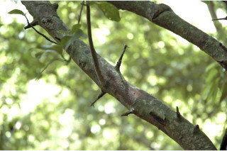
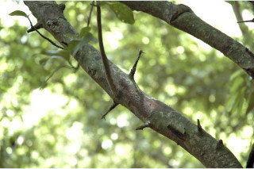
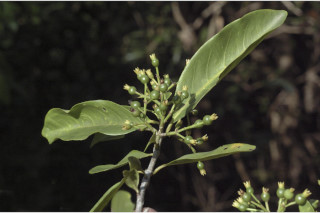
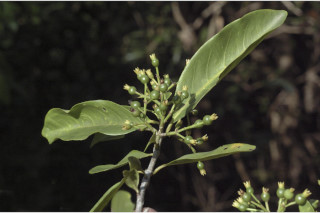

Trunk with short simple or branched thorns; bark grey, lenticellate; blaze yellowish.
ಕಾಂಡ ಸಣ್ಣದಾದ,ಸರಳ ಅಥವಾ ಕವಲೊಡೆದ ಮುಳ್ಳುಗಳ ಸಮೇತವಿರುತ್ತವೆ; ತೊಗಟೆ ಬೂದು ಬಣ್ಣದಲ್ಲಿದ್ದು ಸೂಕ್ಷ್ಮ ವಾಯುವಿನಿಮಯ ಬೆಂಡು ರಂಧ್ರಗಳ ಸಮೇತವಿರುತ್ತವೆ;ಕಚ್ಚು ಮಾಡಿದ ಜಾಗ ಹಳದಿ.
Trunk with short simple or branched thorns; bark grey, lenticellate; blaze yellowish.
மரத்தின் நடுத்தண்டில் கிளைத்த மற்றும் கிளைகளற்ற முட்களுடையது; மரத்தின் பட்டை சாம்பல் நிறமானது, பட்டைத்துளைகள் (லெண்டிசெல்லேட்) உடையது; உள்பட்டை மஞ்சள் நிறமானது.
Young branchlets subterete, glabrous.
ಎಳೆಯ ಕಿರುಕೊಂಬೆಗಳು ಉಪದುಂಡಾಗಿದ್ದು ರೋಮರಹಿತವಾಗಿರುತ್ತವೆ.
Young branchlets subterete, glabrous.
சிறியநுனிக்கிளைகள் குறுக்குவெட்டுத் தோற்றத்தில் வளையமானது, உரோமங்களற்றது.
Leaves simple, opposite, decussate; stipule linear, interpetiolar, caducous and leaving scar; petiole ca. 0.8 cm long, planoconvex in cross section, glabrous; lamina 3.5-7.5 x 1.3-3, obovate, apex obtuse to shortly acuminate with blunt tip, base attenuate, margin entire, coriaceous, glabrous beneath; midrib raised above; secondary_nerves ca. 6 pairs, domatia present at axils; tertiary_nerves obscure.
ಎಲೆಗಳು ಸರಳವಾಗಿದ್ದು ಕತ್ತರಿಯಾಕಾರದ ಅಭಿಮುಖ ಜೋಡನಾ ವ್ಯವಸ್ಥೆಯಲ್ಲಿರುತ್ತವೆ; ಕಾವಿನೆಲೆಗಳು ತೊಟ್ಟುಗಳ ನಡುವೆ ಇದ್ದು ಉದುರಿ ಹೋದ ನಂತರ ಗುರುತುಗಳನ್ನು ಉಳಿಸುತ್ತವೆ; ತೊಟ್ಟು ಅಂದಾಜು 0.8 ಸೆಂ.ಮೀ.ವರೆಗಿನ ಉದ್ದವಿದ್ದು,ಅಡ್ಡ ಸೀಳಿದಾಗ ಸಪಾಟ ಪೀನ ಮಧ್ಯದ ಆಕಾರದಲ್ಲಿರುತ್ತದೆ ಮತ್ತು ರೋಮರಹಿತವಾಗಿರುತ್ತದೆ; ಪತ್ರಗಳು 3.5 -7.5 X 1.3–3 ಸೆಂ.ಮೀ. ಗಾತ್ರ, ಬುಗುರಿಯ ಆಕಾರ ಹೊಂದಿದ್ದು, ಚೂಪಲ್ಲದುದರಿಂದ ಮೊಂಡಾಗ್ರವುಳ್ಳ ಚಿಕ್ಕದಾಗಿ ಕ್ರಮೇಣ ಚೂಪಾಗುವ ತುದಿ, ಒಳಬಾಗಿದ ಬುಡ, ನಯವಾದ ಅಂಚು,ತೊಗಲ್ಲನ್ನೋಲುವ ಮೇಲ್ಮೈ ಹೊಂದಿದ್ದು ತಳಬಾಗದಲ್ಲಿ ರೋಮರಹಿತವಾಗಿರುತ್ತವೆ;ಮಧ್ಯನಾಳ ಪತ್ರದ ಮೇಲ್ಭಾಗದಲ್ಲಿ ಉಬ್ಬಿರುತ್ತದೆ;ಎರಡನೇ ದರ್ಜೆಯ ನಾಳಗಳು ಅಂದಾಜು 6 ಜೋಡಿಗಳಿದ್ದು ಅಕ್ಷಾಕಂಕುಳಿನಲ್ಲಿ ಸೂಕ್ಷ್ಮ ಸಹಜೀವಿ ಗೂಡುಗಳನ್ನು ಹೊಂದಿರುತ್ತವೆ; ಮೂರನೇ ದರ್ಜೆಯ ನಾಳಗಳು ಅಸ್ಪಷ್ಟ.
Leaves simple, opposite, decussate; stipule linear, interpetiolar, caducous and leaving scar; petiole ca. 0.8 cm long, planoconvex in cross section, glabrous; lamina 3.5-7.5 x 1.3-3, obovate, apex obtuse to shortly acuminate with blunt tip, base attenuate, margin entire, coriaceous, glabrous beneath; midrib raised above; secondary_nerves ca. 6 pairs, domatia present at axils; tertiary_nerves obscure.
இலைகள் தனித்தவை, எதிரடுக்கமானவை, குறுக்குமறுக்கானவை; இலையடிச்செதில் கோட்டு வடிவானது, இலையடிச்செதில் இருஇலைக்காம்பிற்கு நடுவே (இண்டர்பீட்டியோலார்) உடையது, எளிதில் உதிரக்கூடியது மற்றும் தழும்புகளை ஏற்படுத்துகின்றன; இலைக்காம்பு 0.8 செ.மீ. நீளமானது, குறுக்குவெட்டுத் தோற்றத்தில் பிளேனோகான்வக்ஸ், உரோமங்களற்றது; இலை அலகு 3.5-7.5 X 1.3-3, தலைகீழ் முட்டை வடிவானது, அலகின் நுனி மெட்டையானது முதல் சிறிது அதிக்கூரியதுடன் அதன் முனை மழுங்கியது, அலகின் தளம் அட்டனுவேட், அலகின் விளிம்பு முழுமையானது, கோரியேசியஸ், உரோமங்களற்றது; மையநரம்பு மேற்புறத்தில் அலகின் பரப்பைவிட உயர்ந்து இருக்கும்; இரண்டாம் நிலை நரம்புகள் 6 ஜோடிகள், டொமேசியா நரம்புகளின் கோணங்களில் கொண்டவை; மூன்றாம் நிலை நரம்புகள் மற்றும் பிற நரம்புகள் கண்களுக்கு புலப்படாது.
Inflorescence umbel like corymbs, axillary; flowers white-cream; pedicel ca. 0.5 cm long.
ಪುಷ್ಪಮಂಜರಿಗಳು ಪೀಠಛತ್ರ ಮಾದರಿಯ ನೀಳಛತ್ರ ರೀತಿಯವುಗಳಾಗಿದ್ದು ಅಕ್ಷಾಕಂಕುಳಿನಲ್ಲಿರುತ್ತವೆ;ಹೂಗಳು ಬಿಳಿ-ಕೆನೆ ಬಣ್ಣದವು;ತೊಟ್ಟು ಅಂದಾಜು 0.5 ಸೆಂ.ಮೀ.ಉದ್ದವಿರುತ್ತವೆ.
Inflorescence umbel like corymbs, axillary; flowers white-cream; pedicel ca. 0.5 cm long.
அம்பல் போன்ற கோரியம்ப் வகை மஞ்சரி, இலைக்கோணங்களில் காணப்படுபவை; மலர்கள் வெள்ளை-கீரிம் நிறமானது; மலர்காம்பு 0.5 செ.மீ. நீளமானது.
Berry, globose, with crown of persistent calyx lobes; seeds many.
ಬೆರ್ರಿಗಳು ಗೋಳಾಕಾರದವುಗಳಾಗಿದ್ದು ಶಾಶ್ವತವಾಗಿ ಉಳಿಯುವ ಪುಷ್ಪಪಾತ್ರೆಯ ಎಸಳುಗಳನ್ನುಳ್ಳ ಮುಕುಟದ ಸಮೇತವಿರುತ್ತವೆ;ಬೀಜಗಳು ಹಲವಾರು.
Berry, globose, with crown of persistent calyx lobes; seeds many.
முழுச்சதைகனி (பெர்ரி), கோள வடிவமானது, கனியின் நுனியில் நிரந்தரமான புல்லி இதழ்கள் உடையது; விதைகள் எண்ணற்றது.


 



 
